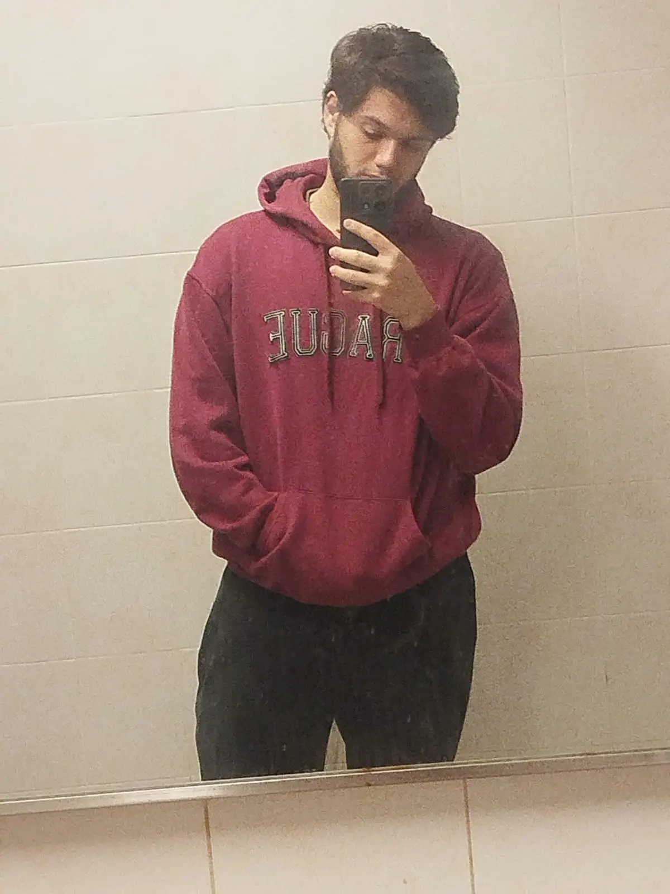

Henri Joel Gonzalez Gonzalez | WDD 130
Hi, my name is Henri, I'm from Uruguay, a beautifull country with more cows than people. I like to play videogames, spend time with my family and friends and now coding. My family it's kinda big, we are 7, my parents, 3 brothers and 2 sisters. I have black hair, but when I was a kid my hair was blond. I'm 1.83 metters, probably I'm taller than you. In 2024 I came back to Uruguay from my mission on Paraguay, where I served for 2 years sharing the gospel of Jesus Christ, there I lived joyfull moments with other missionaries and the people of Paraguay. Now I'm studiyng at BYU-I learning how to code in python, html and css. Also I'm taking a local course called "Jovenes a programar" (Youth let's program) where I'm learning some coding as well as life and work skills. I heard that course it's kinda required to work here!